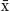
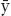

Why my statistics professor
thought I might have cheated
In the spring of my senior year of college, I took a statistics class. I wasn’t particularly enamored of statistics or of most math-based disciplines at that time, but I had promised my dad that I would take the course if I could leave school for ten days to go on a family trip to the Soviet Union. So, I basically took stats in exchange for a trip to the USSR. This turned out to be a great deal, both because I liked statistics more than I thought I would and because I got to visit the USSR in the spring of 1988. Who knew that the country wouldn’t be around in its communist form for much longer?
This story is actually relevant to the chapter; the point is that I wasn’t as devoted to my statistics course during the term as I might have been. Among other responsibilities, I was also writing a senior honors thesis that was due about halfway through the term. We had regular quizzes in the statistics course, many of which I ignored or failed. I studied a little for the midterm and did passably well—literally. But a few weeks before the end of the term, two things happened. First, I finished my thesis, giving me copious amounts of new free time. And second, I realized that statistics wasn’t nearly as difficult as I had been making it out to be. I began studying the stats book and doing the work from earlier in the course. I earned an A on the final exam.
That’s when my statistics professor, whose name I’ve long since forgotten, called me into his office. I don’t remember exactly what he said, but it was something along the lines of “You really did much better on the final than you did on the midterm.” This was not a congratulatory visit during which I was recognized for finally doing serious work in the class. There was an implicit accusation (though not an explicit one) in his summons; the expectation was that I would explain why I did so much better on the final exam than the midterm. In short, this guy suspected that I might have cheated. Now that I’ve taught for many years, I’m more sympathetic to his line of thinking. In nearly every course I’ve taught, there is a striking degree of correlation between a student’s performance on the midterm and on the final. It is highly unusual for a student to score below average on the midterm and then near the top of the class on the final.
I explained that I had finished my thesis and gotten serious about the class (by doing things like reading the assigned textbook chapters and doing the homework). He seemed content with this explanation, and I left, still somewhat unsettled by the implicit accusation.
Believe it or not, this anecdote embodies much of what you need to know about statistical inference, including both its strengths and its potential weaknesses. Statistics cannot prove anything with certainty. Instead, the power of statistical inference derives from observing some pattern or outcome and then using probability to determine the most likely explanation for that outcome. Suppose a strange gambler arrives in town and offers you a wager: He wins $1,000 if he rolls a six with a single die; you win $500 if he rolls anything else—a pretty good bet from your standpoint. He then proceeds to roll ten sixes in a row, taking $10,000 from you.
One possible explanation is that he was lucky. An alternative explanation is that he cheated somehow. The probability of rolling ten sixes in a row with a fair die is roughly 1 in 60 million. You can’t prove that he cheated, but you ought at least to inspect the die.
Of course, the most likely explanation is not always the right explanation. Extremely rare things happen. Linda Cooper is a South Carolina woman who has been struck by lightning four times.1 (The Federal Emergency Management Administration estimates the probability of getting hit by lightning just once as 1 in 600,000.) Linda Cooper’s insurance company cannot deny her coverage simply because her injuries are statistically improbable. To return to my undergraduate statistics exam, the professor had reasonable cause to be suspicious. He saw a pattern that was highly unlikely; this is exactly how investigators spot cheating on standardized exams and how the SEC catches insider trading. But an unlikely pattern is just an unlikely pattern unless it is corroborated by additional evidence. Later in the chapter we will discuss errors that can arise when probability steers us wrong.
For now, we should appreciate that statistical inference uses data to address important questions. Is a new drug effective in treating heart disease? Do cell phones cause brain cancer? Please note that I’m not claiming that statistics can answer these kinds of questions unequivocally; instead, inference tells us what is likely, and what is unlikely. Researchers cannot prove that a new drug is effective in treating heart disease, even when they have data from a carefully controlled clinical trial. After all, it is entirely possible that there will be random variation in the outcomes of patients in the treatment and control groups that are unrelated to the new drug. If 53 out of 100 patients taking the new heart disease medication showed marked improvement compared with 49 patients out of 100 receiving a placebo, we would not immediately conclude that the new medication is effective. This is an outcome that can easily be explained by chance variation between the two groups rather than by the new drug.
But suppose instead that 91 out of 100 patients receiving the new drug show marked improvement, compared with 49 out of 100 patients in the control group. It is still possible that this impressive result is unrelated to the new drug; the patients in the treatment group may be particularly lucky or resilient. But that is now a much less likely explanation. In the formal language of statistical inference, researchers would likely conclude the following: (1) If the experimental drug has no effect, we would rarely see this amount of variation in outcomes between those who are receiving the drug and those who are taking the placebo. (2) It is therefore highly improbable that the drug has no positive effect. (3) The alternative—and more likely—explanation for the pattern of data observed is that the experimental drug has a positive effect.
Statistical inference is the process by which the data speak to us, enabling us to draw meaningful conclusions. This is the payoff! The point of statistics is not to do myriad rigorous mathematical calculations; the point is to gain insight into meaningful social phenomena. Statistical inference is really just the marriage of two concepts that we’ve already discussed: data and probability (with a little help from the central limit theorem). I have taken one major methodological shortcut in this chapter. All of the examples will assume that we are working with large, properly drawn samples. This assumption means that the central limit theorem applies, and that the mean and standard deviation for any sample will be roughly the same as the mean and standard deviation for the population from which it is drawn. Both of these things make our calculations easier.
Statistical inference is not dependent on this simplifying assumption, but the assorted methodological fixes for dealing with small samples or imperfect data often get in the way of understanding the big picture. The purpose here is to introduce the power of statistical inference and to explain how it works. Once you get that, it’s easy enough to layer on complexity.
One of the most common tools in statistical inference is hypothesis testing. Actually, I’ve already introduced this concept—just without the fancy terminology. As noted above, statistics alone cannot prove anything; instead, we use statistical inference to accept or reject explanations on the basis of their relative likelihood. To be more precise, any statistical inference begins with an implicit or explicit null hypothesis. This is our starting assumption, which will be rejected or not on the basis of subsequent statistical analysis. If we reject the null hypothesis, then we typically accept some alternative hypothesis that is more consistent with the data observed. For example, in a court of law the starting assumption, or null hypothesis, is that the defendant is innocent. The job of the prosecution is to persuade the judge or jury to reject that assumption and accept the alternative hypothesis, which is that the defendant is guilty. As a matter of logic, the alternative hypothesis is a conclusion that must be true if we can reject the null hypothesis. Consider some examples.
Null hypothesis: This new experimental drug is no more effective at preventing malaria than a placebo.
Alternative hypothesis: This new experimental drug can help to prevent malaria.
The data: One group is randomly chosen to receive the new experimental drug, and a control group receives a placebo. At the end of some period of time, the group receiving the experimental drug has far fewer cases of malaria than the control group. This would be an extremely unlikely outcome if the experimental drug had no medical impact. As a result, we reject the null hypothesis that the new drug has no impact (beyond that of a placebo), and we accept the logical alternative, which is our alternative hypothesis: This new experimental drug can help to prevent malaria.
This methodological approach is strange enough that we should do one more example. Again, note that the null hypothesis and alternative hypothesis are logical complements. If one is true, the other is not true. Or, if we reject one statement, we must accept the other.
Null hypothesis: Substance abuse treatment for prisoners does not reduce their rearrest rate after leaving prison.
Alternative hypothesis: Substance abuse treatment for prisoners will make them less likely to be rearrested after they are released.
The (hypothetical) data: Prisoners were randomly assigned into two groups; the “treatment” group received substance abuse treatment and the control group did not. (This is one of those cool occasions when the treatment group actually gets treatment!) At the end of five years, both groups have similar rearrest rates. In this case, we cannot reject the null hypothesis.* The data have given us no reason to discard our beginning assumption that substance abuse treatment is not an effective tool for keeping ex-offenders from returning to prison.
It may seem counterintuitive, but researchers often create a null hypothesis in hopes of being able to reject it. In both of the examples above, a research “success” (finding a new malaria drug or reducing recidivism) involved rejecting the null hypothesis. The data made that possible in only one of the cases (the malaria drug).
In a courtroom, the threshold for rejecting the presumption of innocence is the qualitative assessment that the defendant is “guilty beyond a reasonable doubt.” The judge or jury is left to define what exactly that means. Statistics harnesses the same basic idea, but “guilty beyond a reasonable doubt” is defined quantitatively instead. Researchers typically ask, If the null hypothesis is true, how likely is it that we would observe this pattern of data by chance? To use a familiar example, medical researchers might ask, If this experimental drug has no effect on heart disease (our null hypothesis), how likely is it that 91 out of 100 patients getting the drug would show improvement compared with only 49 out of 100 patients getting a placebo? If the data suggest that the null hypothesis is extremely unlikely—as in this medical example—then we must reject it and accept the alternative hypothesis (that the drug is effective in treating heart disease).
In that vein, let us revisit the Atlanta standardized cheating scandal alluded to at several points in the book. The Atlanta test score results were first flagged because of a high number of “wrong-to-right” erasures. Obviously students taking standardized exams erase answers all the time. And some groups of students may be particularly lucky in their changes, without any cheating necessarily being involved. For that reason, the null hypothesis is that the standardized test scores for any particular school district are legitimate and that any irregular patterns of erasures are merely a product of chance. We certainly do not want to be punishing students or administrators because an unusually high proportion of students happened to make sensible changes to their answer sheets in the final minutes of an important state exam.
But “unusually high” does not begin to describe what was happening in Atlanta. Some classrooms had answer sheets on which the number of wrong-to-right erasures were twenty to fifty standard deviations above the state norm. (To put this in perspective, remember that most observations in a distribution typically fall within two standard deviations of the mean.) So how likely was it that Atlanta students happened to erase massive numbers of wrong answers and replace them with correct answers just as a matter of chance? The official who analyzed the data described the probability of the Atlanta pattern occurring without cheating as roughly equal to the chance of having 70,000 people show up for a football game at the Georgia Dome who all happen to be over seven feet tall.2 Could it happen? Yes. Is it likely? Not so much.
Georgia officials still could not convict anybody of wrongdoing, just as my professor could not (and should not) have had me thrown out of school because my final exam grade in statistics was out of sync with my midterm grade. Atlanta officials could not prove that cheating was going on. They could, however, reject the null hypothesis that the results were legitimate. And they could do so with a “high degree of confidence,” meaning that the observed pattern was nearly impossible among normal test takers. They therefore explicitly accepted the alternative hypothesis, which is that something fishy was going on. (I suspect they used more official-sounding language.) Subsequent investigation did in fact uncover the “smoking erasers.” There were reports of teachers changing answers, giving out answers, allowing low-scoring children to copy from high-scoring children, and even pointing to answers while standing over students’ desks. The most egregious cheating involved a group of teachers who held a weekend pizza party during which they went through exam sheets and changed students’ answers.
In the Atlanta example, we could reject the null hypothesis of “no cheating” because the pattern of test results was so wildly improbable in the absence of foul play. But how implausible does the null hypothesis have to be before we can reject it and invite some alternative explanation?
One of the most common thresholds that researchers use for rejecting a null hypothesis is 5 percent, which is often written in decimal form: .05. This probability is known as a significance level, and it represents the upper bound for the likelihood of observing some pattern of data if the null hypothesis were true. Stick with me for a moment, because it’s not really that complicated.
Let’s think about a significance level of .05. We can reject a null hypothesis at the .05 level if there is less than a 5 percent chance of getting an outcome at least as extreme as what we’ve observed if the null hypothesis were true. A simple example can make this much clearer. I hate to do this to you, but assume once again that you’ve been put on missing-bus duty (in part because of your valiant efforts in the last chapter). Only now you are working full-time for the researchers at the Changing Lives study, and they have given you some excellent data to help inform your work. Each bus operated by the organizers of the study has roughly 60 passengers, so we can treat the passengers on any bus as a random sample drawn from the entire Changing Lives population. You are awakened early one morning by the news that a bus in the Boston area has been hijacked by a pro-obesity terrorist group.* Your job is to drop from a helicopter onto the roof of the moving bus, sneak inside through the emergency exit, and then stealthily determine whether the passengers are Changing Lives participants, solely on the basis of their weights. (Seriously, this is no more implausible than most action-adventure plots, and it’s a lot more educational.)
As the helicopter takes off from the commando base, you are given a machine gun, several grenades, a watch that also functions as a high-resolution video camera, and the data that we calculated in the last chapter on the mean weight and standard error for samples drawn from the Changing Lives participants. Any random sample of 60 participants will have an expected mean weight of 162 pounds and standard deviation of 36 pounds, since that is the mean and standard deviation for all participants in the study (the population). With those data, we can calculate the standard error for the sample mean: At mission control, the following distribution is scanned onto the inside of your right retina, so that you can refer to it after penetrating the moving bus and secretly weighing all the passengers inside.
Distribution of Sample Means
As the distribution above shows, we would expect roughly 95 percent of all 60-person samples drawn from the Changing Lives participants to have a mean weight within two standard errors of the population mean, or roughly between 153 pounds and 171 pounds.* Conversely, only 5 times out of 100 would a sample of 60 persons randomly drawn from the Changing Lives participants have a mean weight that is greater than 171 pounds or less than 153 pounds. (You are conducting what is known as a “two-tailed” hypothesis test; the difference between this and a “one-tailed” test will be covered in an appendix at the end of the chapter.) Your handlers on the counterterrorism task force have decided that .05 is the significance level for your mission. If the mean weight of the 60 passengers on the hijacked bus is above 171 or below 153, then you will reject the null hypothesis that the bus contains Changing Lives participants, accept the alternative hypothesis that the bus contains 60 people headed somewhere else, and await further orders.
You successfully drop into the moving bus and secretly weigh all the passengers. The mean weight for this 60-person sample is 136 pounds, which falls more than two standard errors below the mean. (Another important clue is that all of the passengers are children wearing “Glendale Hockey Camp” T-shirts.)
Per your mission instructions, you can reject the null hypothesis that this bus contains a random sample of 60 Changing Lives study participants at the .05 significance level. This means (1) the mean weight on the bus falls into a range that we would expect to observe only 5 times in 100 if the null hypothesis were true and this were really a bus full of Changing Lives passengers; (2) you can reject the null hypothesis at the .05 significance level; and (3) on average, 95 times out of 100 you will have correctly rejected the null hypothesis, and 5 times out of 100 you will be wrong, meaning that you have concluded that this is not a bus of Changing Lives participants, when in fact it is. This sample of Changing Lives folks just happens to have a mean weight that is particularly high or low relative to the mean for the study participants overall.
The mission is not quite over. Your handler at mission control (played by Angelina Jolie in the film version of this example) asks you to calculate a p-value for your result. The p-value is the specific probability of getting a result at least as extreme as the one you’ve observed if the null hypothesis is true. The mean weight for the passengers on this bus is 136, which is 5.7 standard errors below the mean for the Changing Lives study participants. The probability of getting a result at least that extreme if this really were a sample of Changing Lives participants is less than .0001. (In a research document, this would be reported as p<.0001.) With your mission complete, you leap from the moving bus and land safely in the passenger seat of a convertible driving in an adjacent lane.
[This story has a happy ending as well. Once the pro–obesity terrorists learn more about your city’s International Festival of Sausage, they agree to abandon violence and work peacefully to promote obesity by expanding and promoting sausage festivals around the world.]
If the .05 significance level seems somewhat arbitrary, that’s because it is. There is no single standardized statistical threshold for rejecting a null hypothesis. Both .01 and .1 are also reasonably common thresholds for doing the kind of analysis described above.
Obviously rejecting the null hypothesis at the .01 level (meaning that there is less than a 1 in 100 chance of observing a result in this range if the null hypothesis were true) carries more statistical heft than rejecting the null hypothesis at the .1 level (meaning that there is less than a 1 in 10 chance of observing this result if the null hypothesis were true). The pros and cons of different significance levels will be discussed later in the chapter. For now, the important point is that when we can reject a null hypothesis at some reasonable significance level, the results are said to be “statistically significant.”
Here is what that means in real life. When you read in the newspaper that people who eat twenty bran muffins a day have lower rates of colon cancer than people who don’t eat prodigious amounts of bran, the underlying academic research probably looked something like this: (1) In some large data set, researchers determined that individuals who ate at least twenty bran muffins a day had a lower incidence of colon cancer than individuals who did not report eating much bran. (2) The researchers’ null hypothesis was that eating bran muffins has no impact on colon cancer. (3) The disparity in colon cancer outcomes between those who ate lots of bran muffins and those who didn’t could not easily be explained by chance alone. More specifically, if eating bran muffins has no true association with colon cancer, the probability of getting such a wide gap in cancer incidence between bran eaters and non–bran eaters by chance alone is lower than some threshold, such as .05. (This threshold should be established by the researchers before they do their statistical analysis to avoid choosing a threshold after the fact that is convenient for making the results look significant.) (4) The academic paper probably contains a conclusion that says something along these lines: “We find a statistically significant association between daily consumption of twenty or more bran muffins and a reduced incidence of colon cancer. These results are significant at the .05 level.”
When I subsequently read about that study in the Chicago Sun-Times while eating my breakfast of bacon and eggs, the headline is probably more direct and interesting: “20 Bran Muffins a Day Help Keep Colon Cancer Away.” However, that newspaper headline, while much more interesting to read than the academic paper, may also be introducing a serious inaccuracy. The study does not actually claim that eating bran muffins lowers an individual’s risk of getting colon cancer; it merely shows a negative correlation between the consumption of bran muffins and the incidence of colon cancer in one large data set. This statistical association is not sufficient to prove that the bran muffins cause the improved health outcome. After all, the kind of people who eat bran muffins (particularly twenty a day!) may do lots of other things that lower their cancer risk, such as eating less red meat, exercising regularly, getting screened for cancer, and so on. (This is the “healthy user bias” from Chapter 7.) Is it the bran muffins at work here, or is it other behaviors or personal attributes that happen to be shared by people who eat a lot of bran muffins? This distinction between correlation and causation is crucial to the proper interpretation of statistical results. We will revisit the idea that “correlation does not equal causation” later in the book.
I should also point out that statistical significance says nothing about the size of the association. People who eat lots of bran muffins may have a lower incidence of colon cancer—but how much lower? The difference in colon cancer rates for bran muffin eaters and non–bran muffin eaters may be trivial; the finding of statistical significance means only that the observed effect, however tiny, is not likely to be a coincidence. Suppose you stumble across a well-designed study that has found a statistically significant positive relationship between eating a banana before the SAT and achieving a higher score on the math portion of the test. One of the first questions you want to ask is, How big is this effect? It could easily be .9 points; on a test with a mean score of 500, that is not a life-changing figure. In Chapter 11, we will return to this crucial distinction between size and significance when it comes to interpreting statistical results.
Meanwhile, a finding that there is “no statistically significant association” between two variables means that any relationship between the two variables can reasonably be explained by chance alone. The New York Times recently ran an exposé on technology companies peddling software that they claim improves student performance, when the data suggest otherwise.3 According to the article, Carnegie Mellon University sells a software program called Cognitive Tutor with this bold claim: “Revolutionary Math Curricula. Revolutionary Results.” Yet an assessment of Cognitive Tutor conducted by the U.S. Department of Education concluded that the product had “no discernible effects” on the test scores of high school students. (The Times suggested that the appropriate marketing campaign should be “Undistinguished Math Curricula. Unproven Results.”) In fact, a study of ten software products designed to teach skills such as math or reading found that nine of them “did not have statistically significant effects on test scores.” In other words, federal researchers cannot rule out mere chance as the cause of any variation in the performance of students who use these software products and students who do not.
Let me pause here to remind you why all of this matters. An article in the Wall Street Journal in May of 2011 carried the headline “Link in Autism, Brain Size.” This is an important breakthrough, as the causes of autism spectrum disorder remain elusive. The first sentence of the Wall Street Journal story, which summarized a paper published in the Archives of General Psychiatry, reports, “Children with autism have larger brains than children without the disorder, and the growth appears to occur before age 2, according to a new study released on Monday.”4 On the basis of brain imaging conducted on 59 children with autism and 38 children without autism, researchers at the University of North Carolina reported that children with autism have brains that are up to 10 percent larger than those of children of the same age without autism.
Here is the relevant medical question: Is there a physiological difference in the brains of young children who have autism spectrum disorder? If so, this insight might lead to a better understanding of what causes the disorder and how it can be treated or prevented.
And here is the relevant statistical question: Can researchers make sweeping inferences about autism spectrum disorder in general that are based on a study of a seemingly small group of children with autism (59) and an even smaller control group (38)—a mere 97 subjects in all? The answer is yes. The researchers concluded that the probability of observing the differences in total brain size that they found in their two samples would be a mere 2 in 1,000 (p = .002) if there is in fact no real difference in brain size between children with and without autism spectrum disorder in the overall population.
I tracked down the original study in the Archives of General Psychiatry.5 The methods used by these researchers are no more sophisticated than the concepts we’ve covered so far. I will give you a quick tour of the underpinnings of this socially and statistically significant result. First, you should recognize that each group of children, the 59 with autism and the 38 without autism, constitutes a reasonably large sample drawn from their respective populations—all children with and without autism spectrum disorder. The samples are large enough that the central limit will apply. If you’ve already tried to block the last chapter out of your mind, I will remind you of what the central limit theorem tells us: (1) the sample means for any population will be distributed roughly as a normal distribution around the true population mean; (2) we would expect the sample mean and the sample standard deviation to be roughly equal to the mean and standard deviation for the population from which it is drawn; and (3) roughly 68 percent of sample means will lie within one standard error of the population mean, roughly 95 percent will lie within two standard errors of the population mean, and so on.
In less technical language, this all means that any sample should look a lot like the population from which it is drawn; while every sample will be different, it would be relatively rare for the mean of a properly drawn sample to deviate by a huge amount from the mean for the relevant underlying population. Similarly, we would also expect two samples drawn from the same population to look a lot like each other. Or, to think about the situation somewhat differently, if we have two samples that have extremely dissimilar means, the most likely explanation is that they came from different populations.
Here is a quick intuitive example. Suppose your null hypothesis is that male professional basketball players have the same mean height as the rest of the adult male population. You randomly select a sample of 50 professional basketball players and a sample of 50 men who do not play professional basketball. Suppose the mean height of your basketball sample is 6 feet 7 inches, and the mean height of the non–basketball players is 5 feet 10 inches (a 9-inch difference). What is the probability of observing such a large difference in mean height between the two samples if in fact there is no difference in average height between professional basketball players and all other men in the overall population? The nontechnical answer: very, very, very low.*
The autism research paper has the same basic methodology. The paper compares several measures of brain size between the samples of children. (The brain measurements were done with magnetic resonance imaging at age two, and again between ages four and five.) I’ll focus on just one measurement, the total brain volume. The researchers’ null hypothesis was presumably that there are no anatomical differences in the brains of children with and without autism. The alternative hypothesis is that the brains of children with autism spectrum disorder are fundamentally different. Such a finding would still leave lots of questions, but it would point to a direction for further inquiry.
In this study, the children with autism spectrum disorder had a mean brain volume of 1310.4 cubic centimeters; the children in the control group had a mean brain volume of 1238.8 cubic centimeters. Thus, the difference in average brain volume between the two groups is 71.6 cubic centimeters. How likely would this result be if in fact there were no difference in average brain size in the general population between children who have autism spectrum disorder and children who do not?
You may recall from the last chapter that we can create a standard error for each of our samples: where s is the standard deviation of the sample and n is the number of observations. The research paper gives us these figures. The standard error for the total brain volume of the 59 children in the autism spectrum disorder sample is 13 cubic centimeters; the standard error for the total brain volume of the 38 children in the control group is 18 cubic centimeters. You will recall that the central limit theorem tells us that for 95 samples out of 100, the sample mean is going to lie within two standard errors of the true population mean, in one direction or the other.
As a result, we can infer from our sample that 95 times out of 100 the interval of 1310.4 cubic centimeters ± 26 (which is two standard errors) will contain the average brain volume for all children with autism spectrum disorder. This expression is called a confidence interval. We can say with 95 percent confidence that the range 1284.4 to 1336.4 cubic centimeters contains the average total brain volume for children in the general population with autism spectrum disorder.
Using the same methodology, we can say with 95 percent confidence that the interval of 1238.8 ± 36, or between 1202.8 and 1274.8 cubic centimeters, will include the average brain volume for children in the general population who do not have autism spectrum disorder.
Yes, there are a lot of numbers here. Perhaps you’ve just hurled the book across the room.* If not, or if you then went and retrieved the book, what you should notice is that our confidence intervals do not overlap. The lower bound of our 95 percent confidence interval for the average brain size of children with autism in the general population (1284.4 cubic centimeters) is still higher than the upper bound for the 95 percent confidence interval for the average brain size for young children in the population without autism (1274.8 cubic centimeters), as the following diagram illustrates.
This is the first clue that there may be an underlying anatomical difference in the brains of young children with autism spectrum disorder. Still, it’s just a clue. All of these inferences are based on data from fewer than 100 children. Maybe we just have wacky samples.
One final statistical procedure can bring all this to fruition. If statistics were an Olympic event like figure skating, this would be the last program, after which elated fans throw bouquets of flowers onto the ice. We can calculate the exact probability of observing a difference of means at least this large (1310.4 cubic centimeters versus 1238.8 cubic centimeters) if there is really no difference in brain size between children with autism spectrum and all other children in the general population. We can find a p-value for the observed difference in means.
Lest you hurl the book across the room again, I have put the formula in an appendix. The intuition is quite straightforward. If we draw two large samples from the same population, we would expect them to have very similar means. In fact, our best guess is that they will have identical means. For example, if I were to select 100 players from the NBA and they had an average height of 6 feet 7 inches, then I would expect another random sample of 100 players from the NBA to have a mean height close to 6 feet 7 inches. Okay, maybe the two samples would be an inch or 2 apart. But it’s less likely that the means of the two samples will be 4 inches apart—and even less likely that there will be a difference of 6 or 8 inches. It turns out that we can calculate a standard error for the difference between two sample means; this standard error gives us a measure of the dispersion we can expect, on average, when we subtract one sample mean from the other. (As noted earlier, the formula is in the chapter appendix.) The important thing is that we can use this standard error to calculate the probability that two samples come from the same population. Here is how it works:
1. If two samples are drawn from the same population, our best guess for the difference between their means is zero.
2. The central limit theorem tells us that in repeated samples, the difference between the two means will be distributed roughly as a normal distribution. (Okay, have you come to love the central limit theorem yet or not?)
3. If the two samples really have come from the same population, then in roughly 68 cases out of 100, the difference between the two sample means will be within one standard error of zero. And in roughly 95 cases out of 100, the difference between the two sample means will be within two standard errors of zero. And in 99.7 cases out of 100, the difference will be within three standard errors of zero—which turns out to be what motivates the conclusion in the autism research paper that we started with.
As noted earlier, the difference in the mean brain size between the sample of children with autism spectrum disorder and the control group is 71.6 cubic centimeters. The standard error on that difference is 22.7, meaning that the difference in means between the two samples is more than three standard errors from zero; we would expect an outcome this extreme (or more so) only 2 times in 1,000 if these samples are drawn from an identical population.
In the paper published in the Archives of General Psychiatry, the authors report a p-value of .002, as I mentioned earlier. Now you know where it came from!
For all the wonders of statistical inference, there are some significant pitfalls. They derive from the example that introduced the chapter: my suspicious statistics professor. The powerful process of statistical inference is based on probability, not on some kind of cosmic certainty. We don’t want to be sending people to jail just for doing the equivalent of drawing two royal flushes in a row; it can happen, even if someone is not cheating. As a result, we have a fundamental dilemma when it comes to any kind of hypothesis testing.
This statistical reality came to a head in 2011 when the Journal of Personality and Social Psychology prepared to publish an academic paper that, on the surface, seemed like thousands of other academic papers.6 A Cornell professor explicitly proposed a null hypothesis, conducted an experiment to test his null hypothesis, and then rejected the null hypothesis at the .05 significance on the basis of the experimental results. The result was uproar, in scientific circles as well as mainstream media outlets like the New York Times.
Suffice it to say that articles in the Journal of Personality and Social Psychology don’t usually attract big headlines. What exactly made this study so controversial? The researcher in question was testing humans’ capacity to exercise extrasensory perception, or ESP. The null hypothesis was that ESP does not exist; the alternative hypothesis was that humans do have extrasensory powers. To study this question, the researcher recruited a large sample of participants to examine two “curtains” posted on a computer screen. A software program randomly put an erotic photo behind one curtain or the other. In repeated trials, study participants were able to pick the curtain with the erotic photo behind it 53 percent of the time, whereas probability says they would be right only 50 percent of the time. Because of the large sample size, the researcher was able to reject the null hypothesis that extrasensory perception does not exist and accept instead the alternative hypothesis that extrasensory perception can enable individuals to sense future events. The decision to publish the paper was widely criticized on the grounds that a single statistically significant event can easily be a product of chance, especially when there is no other evidence corroborating or even explaining the finding. The New York Times summarized the critiques: “Claims that defy almost every law of science are by definition extraordinary and thus require extraordinary evidence. Neglecting to take this into account—as conventional social science analyses do—makes many findings look far more significant than they really are.”
One answer to this kind of nonsense would appear to be a more rigorous threshold for defining statistical significance, such as .001.* But that creates problems of its own. Choosing an appropriate significance level involves an inherent trade-off.
If our burden of proof for rejecting the null hypothesis is too low (e.g., .1), we are going to find ourselves periodically rejecting the null hypothesis when in fact it is true (as I suspect was the case with the ESP study). In statistical parlance, this is known as a Type I error. Consider the example of an American courtroom, where the null hypothesis is that a defendant is not guilty and the threshold for rejecting that null hypothesis is “guilty beyond a reasonable doubt.” Suppose we were to relax that threshold to something like “a strong hunch that the guy did it.” This is going to ensure that more criminals go to jail—and also more innocent people. In a statistical context, this is the equivalent of having a relatively low significance level, such as .1.
Well, 1 in 10 is not exactly wildly improbable. Consider this challenge in the context of approving a new cancer drug. For every ten drugs that we approve with this relatively low burden of statistical proof, one of them does not actually work and showed promising results in the trial just by chance. (Or, in the courtroom example, for every ten defendants that we find guilty, one of them was actually innocent.) A Type I error involves wrongly rejecting a null hypothesis. Though the terminology is somewhat counterintuitive, this is also known as a “false positive.” Here is one way to reconcile the jargon. When you go to the doctor to get tested for some disease, the null hypothesis is that you do not have that disease. If the lab results can be used to reject the null hypothesis, then you are said to test positive. And if you test positive but are not really sick, then it’s a false positive.
In any case, the lower our statistical burden for rejecting the null hypothesis, the more likely it is to happen. Obviously we would prefer not to approve ineffective cancer drugs, or send innocent defendants to prison.
But there is a tension here. The higher the threshold for rejecting the null hypothesis, the more likely it is that we will fail to reject a null hypothesis that ought to be rejected. If we require five eyewitnesses in order to convict every criminal defendant, then a lot of guilty defendants are wrongly going to be set free. (Of course, fewer innocents will go to prison.) If we adopt a .001 significance level in the clinical trials for all new cancer drugs, then we will indeed minimize the approval of ineffective drugs. (There is only a 1 in 1,000 chance of wrongly rejecting the null hypothesis that the drug is no more effective than a placebo.) Yet now we introduce the risk of not approving many effective drugs because we have set the bar for approval so high. This is known as a Type II error, or false negative.
Which kind of error is worse? That depends on the circumstances. The most important point is that you recognize the trade-off. There is no statistical “free lunch.” Consider these nonstatistical situations, all of which involve a trade-off between Type I and Type II errors.
1. Spam filters. The null hypothesis is that any particular e-mail message is not spam. Your spam filter looks for clues that can be used to reject that null hypothesis for any particular e-mail, such as huge distribution lists or phrases like “penis enlargement.” A Type I error would involve screening out an e-mail message that is not actually spam (a false positive). A Type II error would involve letting spam through the filter into your inbox (a false negative). Given the costs of missing an important e-mail relative to the costs of getting the occasional message about herbal vitamins, most people would probably err on the side of allowing Type II errors. An optimally designed spam filter should require a relatively high degree of certainty before rejecting the null hypothesis that an incoming e-mail is legitimate and blocking it.
2. Screening for cancer. We have numerous tests for the early detection of cancer, such as mammograms (breast cancer), the PSA test (prostate cancer), and even full-body MRI scans for anything else that might look suspicious. The null hypothesis for anyone undergoing this kind of screening is that no cancer is present. The screening is used to reject this null hypothesis if the results are suspicious. The assumption has always been that a Type I error (a false positive that turns out to be nothing) is far preferable to a Type II error (a false negative that misses a cancer diagnosis). Historically, cancer screening has been the opposite of the spam example. Doctors and patients are willing to tolerate a fair number of Type I errors (false positives) in order to avoid the possibility of a Type II error (missing a cancer diagnosis). More recently, health policy experts have begun to challenge this view because of the high costs and serious side effects associated with false positives.
3. Capturing terrorists. Neither a Type I nor a Type II error is acceptable in this situation, which is why society continues to debate about the appropriate balance between fighting terrorism and protecting civil liberties. The null hypothesis is that an individual is not a terrorist. As in a regular criminal context, we do not want to commit a Type I error and send innocent people to Guantánamo Bay. Yet in a world with weapons of mass destruction, letting even a single terrorist go free (a Type II error) can be literally catastrophic. This is why—whether you approve of it or not—the United States is holding suspected terrorists at Guantánamo Bay on the basis of less evidence than might be required to convict them in a regular criminal court.
Statistical inference is not magic, nor is it infallible, but it is an extraordinary tool for making sense of the world. We can gain great insight into many life phenomena just by determining the most likely explanation. Most of us do this all the time (e.g., “I think that college student passed out on the floor surrounded by beer cans has had too much to drink” rather than “I think that college student passed out on the floor surrounded by beer cans has been poisoned by terrorists”).
Statistical inference merely formalizes the process.
Calculating the standard error for a difference of means
Formula for comparing two means
where  = mean for sample x
 = mean for sample y
sx = standard deviation for sample x
sy = standard deviation for sample y
nx = number of observations in sample x
ny = number of observations in sample y
Our null hypothesis is that the two sample means are the same. The formula above calculates the observed difference in means relative to the size of the standard error for the difference in means. Again, we lean heavily on the normal distribution. If the underlying population means are truly the same, then we would expect the difference in sample means to be less than one standard error about 68 percent of the time; less than two standard errors about 95 percent of the time; and so on.
In the autism example from the chapter, the difference in the mean between the two samples was 71.6 cubic centimeters with a standard error of 22.7. The ratio of that observed difference is 3.15, meaning that the two samples have means that are more than 3 standard errors apart. As noted in the chapter, the probability of getting samples with such different means if the underlying populations have the same mean is very, very low. Specifically, the probability of observing a difference of means that is 3.15 standard errors or larger is .002.
Difference in Sample Means
One- and Two-Tailed Hypothesis Testing
This chapter introduced the idea of using samples to test whether male professional basketball players are the same height as the general population. I finessed one detail. Our null hypothesis is that male basketball players have the same mean height as men in the general population. What I glossed over is that we have two possible alternative hypotheses.
One alternative hypothesis is that male professional basketball players have a different mean height than the overall male population; they could be taller than other men in the population, or shorter. This was the approach that you took when you dropped into the hijacked bus and weighed the passengers to determine whether they were participants in the Changing Lives study. You could reject the null hypothesis that the bus participants were part of the study if the passengers’ mean weight was significantly higher than the overall mean for Changing Lives participants or if it was significantly lower (as turned out to be the case). Our second alternative hypothesis is that male professional basketball players are taller on average than other men in the population. In this case, the background knowledge that we bring to this question tells us that basketball players cannot possibly be shorter than the general population. The distinction between these two alternative hypotheses will determine whether we do a one-tailed hypothesis test or a two-tailed hypothesis test.
In both cases, let’s assume that we are going to do a significance test at the .05 level. We will reject our null hypothesis if we observe a difference in heights between the two samples that would occur 5 times in 100 or less if all these guys really are the same height. So far, so good.
Here is where things get a little more nuanced. When our alternative hypothesis is that basketball players are taller than other men, we are going to do a one-tailed hypothesis test. We will measure the difference in mean height between our sample of male basketball players and our sample of regular men. We know that if our null hypothesis is true, then we will observe a difference that is 1.64 standard errors or greater only 5 times in 100. We reject our null hypothesis if our result falls in this range, as the following diagram shows.
Difference in Sample Means
(Measured in Standard Errors)
Now let’s revisit the other alternative hypothesis—that male basketball players could be taller or shorter than the general population. Our general approach is the same. Again, we will reject our null hypothesis that basketball players are the same height as the general population if we get a result that would occur 5 times in 100 or less if there really is no difference in heights. The difference, however, is that we must now entertain the possibility that basketball players are shorter than the general population. We will therefore reject our null hypothesis if our sample of male basketball players has a mean height that is significantly higher or lower than the mean height for our sample of normal men. This requires a two-tailed hypothesis test. The cutoff points for rejecting our null hypothesis will be different because we must now account for the possibility of a large difference in sample means in both directions: positive or negative. More specifically, the range in which we will reject our null hypothesis has been split between the two tails. We will still reject our null hypothesis if we get an outcome that would occur 5 percent of the time or less if basketball players are the same height as the general population; only now we have two different ways that we can end up rejecting the null hypothesis.
We will reject our null hypothesis if the mean height for the sample of male basketball players is so much larger than the mean for the normal men that we would observe such an outcome only 2.5 times in 100 if basketball players are really the same height as everyone else.
And we will reject our null hypothesis if the mean height for the sample of male basketball players is so much smaller than the mean for the normal men that we would observe such an outcome only 2.5 times in 100 if basketball players are really the same height as everyone else.
Together, these two contingencies add up to 5 percent, as the diagram below illustrates.
Difference in Sample Means
(Measured in Standard Errors)
Judgment should inform whether a one- or a two-tailed hypothesis is more appropriate for the analysis being conducted.
* As a matter of semantics, we have not proved the null hypothesis to be true (that substance abuse treatment has no effect). It may turn out to be extremely effective for another group of prisoners. Or perhaps many more of the prisoners in this treatment group would have been rearrested if they had not received the treatment. In any case, on the basis of the data collected, we have merely failed to reject our null hypothesis. There is a similar distinction between “failing to reject” a null hypothesis and accepting that null hypothesis. Just because one study could not disprove that substance abuse treatment has no effect (yes, a double negative) does not mean that one must accept that substance abuse treatment is useless. There is a meaningful statistical distinction here. That said, research is often designed to inform policy, and prison officials, who have to decide where to allocate resources, might reasonably accept the position that substance treatment is ineffective until they are persuaded otherwise. Here, as in so many other areas of statistics, judgment matters.
* This example is inspired by real events. Obviously many details have been changed for national security reasons. I can neither confirm nor deny my own involvement.
* To be precise, 95 percent of all sample means will lie within 1.96 standard errors above or below the population mean.
* There are two possible alternative hypotheses. One is that male professional basketball players are taller than the overall male population. The other is merely that male professional basketball players have a different mean height than the overall male population (leaving open the possibility that male basketball players may actually be shorter than other men). This distinction has a small impact when one performs significance tests and calculates p-values. It is explained in more advanced texts and is not important to our general discussion here.
* I will admit that I did once tear a statistics book in half out of frustration.
* Another answer is to attempt to replicate the results in additional studies.